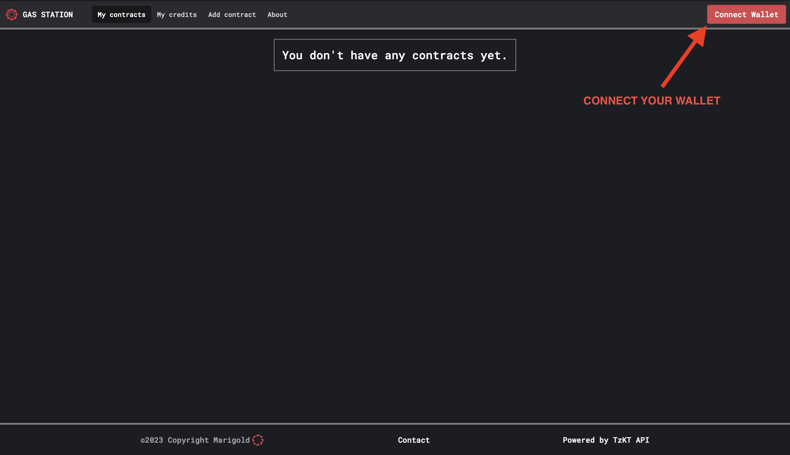
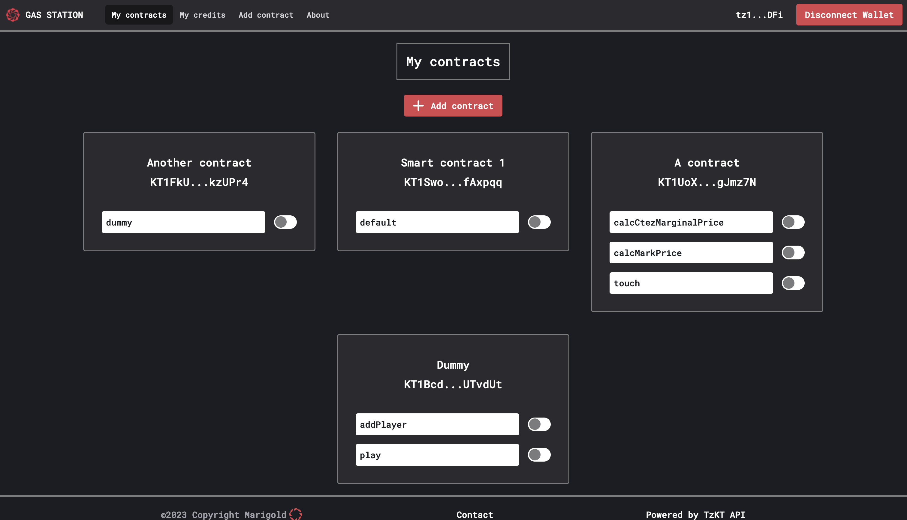
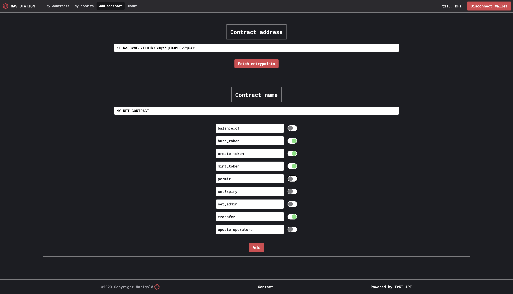
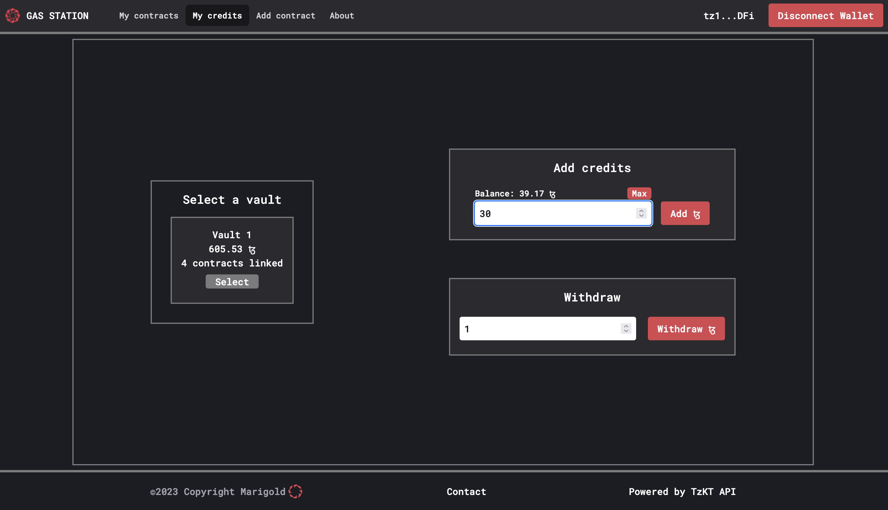

Marigold Gas Station documentation
Introduction
The Gas Station is a tool allowing developers to sponsor the transactions of their users. It can be used to facilitate user onboarding, or to implement a specific economic model (e.g., users can mint a NFT freely, but pay a fee when reselling it) which does not need the user to possess tez.
The Gas Station would typically be used by video game developers to subsidize activities for users. It does not require these users to do any transaction or reveal their account, as the Gas Station account independently processes those transactions. However, it's important to note that this workflow may necessitate the use of specific smart contract patterns, such as permit (TZIP 17).
Currently, the API URL for Ghostnet is: https://ghostnet.gas-station-api.marigold.dev. The Gas Station is not yet available on the Mainnet.
Gas Station Webapp
The Gas Station webapp allows developers to manage sponsored contracts and operations as well as their budget. It also allows to express basic conditions on the spending of credits, for instance by giving a maximum budget per day.
The webapp is hosted by Marigold: Gas Station webapp on Ghostnet.
⚠️ Note: currently available only on Ghostnet ⚠️
Usage
Wallet connection
Like all dApps, one of the first things to do is connect your wallet by clicking on the button in the top right corner.

Your contracts
The homepage lists all the contracts registered in the Gas Station as well as their entrypoints. Entrypoints can be activated or deactivated, depending on if the operations targeting those entrypoints should be sponsored or not.

Add a new contract
To add a new contract, click on Add contract and fill in the required information. Start by entering the contract address to retrieve the associated entrypoints for your contract. Then, name the contract and activate the entrypoints which you want to sponsor.

Add credits to your vault
The Gas Station sponsors operations to your contracts using the tez you have put in a vault. To add credits to your vault, go to the My credits page. Enter the amount of tez you want to send and confirm. After a few seconds, your vault balance and overall balance will be updated.

Withdraw credits
You can also withdraw tez from your vault. On the My credits page, enter the amount of tez you want to withdraw and confirm. For security reasons, we require a signature which depends on the vault, the amount, and a withdraw counter which is stored in the database.
Test
Once the contract is added and credits are transferred to your vault, you can integrate the Gas Station into your dApps by following this guide. This will allow you to test the seamless integration of the Gas Station with your dApps.
SDKs
Getting started
We propose two SDKs (in TypeScript and in Unity) to use the Gas Station from your applications.
Typescript
Installation
To install the Typescript SDK in your project, run:
npm install --save @marigold-dev/gas-station-lib
Explanations
The SDK consists of two classes: GasStation and PermitContract.
There are also two variables:
GAS_STATION_PUBLIC_API_GHOSTNETwhich redirect to https://ghostnet.gas-station-api.marigold.dev/operationGAS_STATION_PUBLIC_API_MAINNETwhich redirect to https://gas-station-api.marigold.dev/operation (Not available yet)
The GasStation class enables easy communication with the Gas Station API without the need to manually initialize the HTTP request.
To initialize this class, you need to provide it with a Gas Station API URL. For now, you can use https://gas-station-api.marigold.dev/operation.
The class has two methods:
postOperationtakes asenderparameter (usually the user's address) and anoperationof the following type:
export type Operation = {
destination: string;
parameters: unknown;
};
This method then prepares the HTTP request and sends it to the /operation endpoint of the API, which processes the operation.
postOperationsalso takes asenderand an array ofOperation, allowing you to send multiple operations at once. These operations will be treated atomically by the API: if the simulation of one operation fails, then they are all discarded.
The PermitContract class allows the generation of a off-chain permit TZIP-17 for a contract implementing TZIP-17.
A permit is an authorization to call a specific endpoint of a smart contract with a specified parameter on behalf of a given address. This authorization may have an expiration. It is particularly useful for handling FA tokens when the user has ownership (transfer, update_operation, approve).
This class has two methods:
generatePermitcreates a permit from a transfer operation. It returns an object containing:
{
bytes: string, // the bytes containing the permit
transfer_hash: string, // the hash of the transfer operation
}
After calling generatePermit, you need to ask the token owner for their signature.
permitCallgenerates the permit operation using thepermitentrypoint on the target contract. This method takes an object of type:
type PermitOperation = {
publicKey: string;
signature: string;
transferHash: string;
};
and returns an operation of type TransferParams, which can be sent using the GasStation class.
Usage
First import and initialize the GasStation object from the SDK:
import { GasStation } from '@marigold-dev/gas-station-lib'
const gasApi = new GasStation()
ℹ️ NOTE: By default, the Gas Station used by the SDK is the Marigold one on Ghostnet but you can also provide a apiURL like:
import { GasStation, GAS_STATION_PUBLIC_API_GHOSTNET} from '@marigold-dev/gas-station-lib'
const gasApi = new GasStation({
apiURL: GAS_STATION_PUBLIC_API_GHOSTNET // or the URL directly
})
Next, you can forge your operation, for example, to mint an NFT (assuming the contract has a mint_token entrypoint):
const mintOperation = await contract.methodsObject.mint_token([{
owner: userAddress,
token_id: tokenId,
amount_: 1
}]).toTransferParams()
Finally, you can send your operation to the Gas Station with:
const response = await gasApi.postOperation(userAddress, {
destination: mintOperation.to,
parameters: mintOperation.parameter
});
Unity
🚧 Work in Progress 🚧
API
Developing a web application with the Gas Station
This chapter walks through a simple example of a dapp using the Gas Station. You can try it online at this address.
Template
The first step is to retrieve the code template located here. Once retrieved, you can run the following commands:
npm install
npm run check
ℹ️ Note: If npm run check returns some errors, it's ok. It's just to initialize some Svelte tools.
To test that everything works well, you can use:
npm run dev
The files of interest are located in src/lib. You will find Svelte components and a tezos.ts file that contains utility functions such as wallet connection, etc.
To distinguish between a simple call to the Gas Station and a more complex examples involving permits, we develop two distinct components, src/lib/MintingComponent.svelte and src/lib/StakingComponent.svelte.
Let's go ! 💪
Minting an NFT
We'll start with minting an NFT by a user. The contract we'll use is available at this address on Ghostnet: KT1HUdxmgZUw21ED9gqELVvCty5d1ff41p7J.
This contract has an admin, which is the only account allowed to mint NFTs. This is the same
settings as you would have in a video game, where the game decides when to mint an NFT for a user.
In this case, the contract admin has been set to be the Gas Station account, because the mint
entrypoint is always going to be called by the Gas Station.
The goal here is for the user to initiate the mint action and retrieve their NFT without having to pay gas fees. For this, we will use the TypeScript SDK.
First, we'll setup the GasStation SDK as follows:
const gasStationAPI = new GasStation()
ℹ️ GasStation class will target the Gas Station deployed on Ghostnet by default.
Next, we'll retrieve an instance of our contract, using Taquito.
const contract = await Tezos.wallet.at(PUBLIC_PERMIT_CONTRACT);
ℹ️ The Tezos instance of Taquito is already initialized in the tezos.ts file, so it can be directly imported.
ℹ️ PUBLIC_PERMIT_CONTRACT is an environment variable corresponding to the address of your NFT
contract. It is defined in the .env file.
Afterward, we will forge our operation to send to the Gas Station:
const mintOperation = await contract.methodsObject.mint_token([{
owner: userAddress,
token_id: 0,
amount_: 1
}]).toTransferParams()
Using Taquito, we forge a transfer operation on the mint_token entrypoint.
The parameters for this entrypoint are:
owner: the future owner of the NFTtoken_id: ID of the token that we are going to mintamount_: the quantity of tokens we want to mint.
Finally, once the operation is forged, we can send it to the Gas Station API:
const response = await gasStationAPI.postOperation(userAddress, {
destination: mintOperation.to,
parameters: mintOperation.parameter
});
The operation will take a few seconds to be processed by the Gas Station (usually 12/15 seconds) if everything is correct. If an error occurs (insufficient funds, authorization issue for minting the NFT, etc.), an error code will be returned, which you can handle in your dApp to inform the user.
Staking an NFT
Minting NFTs from a single address is a simple enough example to start. However, a complete application would typically offer the possibility for the users to transfer or sell their NFTs. As final users do not have tez in their wallet, all the transactions are posted by the Gas Station.
Despite this centralization, it is still possible to maintain security and non-custodiality using permits. In this section, we call staking the operation of sending an NFT to a contract. As the user owns the NFT, it is appropriate to sign a permit (authorization) to perform this transfer.
To facilitate the development of this new feature, we will also use the TypeScript SDK (for reference, you have all the information here)
To start, let's initialize the GasStation and PermitContract classes from the SDK:
ℹ️ GasStation class will target the Gas Station deployed on Ghostnet by default.
const gasStationApi = new GasStation();
const permitContract = new PermitContract(PUBLIC_PERMIT_CONTRACT, Tezos);
Now we can generate our permit using the generatePermit method:
const permitData = await permitContract.generatePermit({
from_: userAddress,
txs: [{
to_: PUBLIC_STAKING_CONTRACT,
token_id,
amount: 1
}]
});
Some explanations:
- The variable
PUBLIC_STAKING_CONTRACTcontains the address of the staking contract (available at this addressKT1VVotciVbvz1SopVfoXsxXcpyBBSryQgEnon Ghostnet). - The
token_idcorresponds to the ID of the token you want to stake.
permitData then contains the hash of the permit bytes and the hash of transfer operation transfer_hash:
{
bytes: string;
transfer_hash: string;
}
Next, we need to have the owner of the token sign this permit and retrieve the signature.
This is easily done using Taquito:
const signature = (await (await wallet.client).requestSignPayload({
signingType: SigningType.MICHELINE,
payload: permit_data.bytes
})).signature;
Once we have the signed permit, we can register it with the contract that implements the permit entrypoint.
Again, we can use the SDK for this:
const permitOperation = await permitContract.permitCall({
publicKey: activeAccount.publicKey,
signature: signature,
transferHash: permit_data.transfer_hash
});
publicKeyis the public key of the token's ownersignatureis the signature of the permit obtained in the previous steptransferHashis the hash of the transfer operation returned during the permit creation
At this point, we have all the necessary information regarding the permit. Now, we can forge the staking operation itself and send everything to the Gas Station.
To forge the staking operation, we follow the usual process: we retrieve the contract instance using Taquito and craft the operation to get the parameters.
const stakingContract = await Tezos.wallet.at(PUBLIC_STAKING_CONTRACT);
const stakingOperation = await stakingContract.methods.stake(
1,
userAddress
).toTransferParams();
ℹ️ PUBLIC_STAKING_CONTRACT is also an environment variable containing the staking contract's address.
All that remains is to send the operation to the Gas Station to have the gas fees covered:
const response = await gasStationApi.postOperations(userAddress,
[
{
destination: permitOperation.to,
parameters: permitOperation.parameter
},
{
destination: stakingOperation.to,
parameters: stakingOperation.parameter
}
]);
Here, we use postOperations to submit a batch of operations. This batch contains the operation to
register the permit and the staking operation. When calling the staking contract's stake
entrypoint, the permit will be revealed and consumed.
Similar to the minting operation, the Gas Station will respond in a few tens of seconds.
Conclusion
This simple example shows how a user without any tez can mint an NFT and transfer it to another contract in a secure way. This is possible thanks to the Gas Station, which relays the transaction by paying the fees.
Feel free to send us your feedback and comments on this tutorial. 😃
An introduction to off-chain permits
In the Tutorial chapter, we show how to transfer a NFT to a smart contract through the Gas Station. As the corresponding operation is ultimately going to get posted by the Gas Station account, there is an issue: how is NFT contract going to allow this transfer on behalf of the user? While FA2 contracts, which are used to implement NFTs, support the concept of operators accounts acting on the behalf of the user, only the original owner of the NFT can allow a new operator to do so. The simplest way would be to modify the NFT contract to
- make the Gas Station account a super-user of the contract, and
- let this account register third-party contracts as operators, which would allow the transfer to happen
This, of course, creates a security (and, potentially, legal) issue: if the key of Marigold Gas
Station account gets stolen, then several FA 2 contracts could be compromised as well. On the other
hand, users whose operations get sponsored are not supposed to have any tez in their wallet, and
thus cannot post the update_operator call on-chain themselves.
What is the solution, then?
Off-chain permits
To solve this problem in a secure way, the notion of off-chain permits was introduced by TZIP
17. It extends the FA 2 standard with a few new
entrypoints. The most interesting one, itself called permit, can be called by anyone, and
expects a list of authorizations for transfers signed by the owners. Those transfers are signed
off-chain: this means that the application has to ask the users for their signature through the
usual ways (e.g. a Beacon-compatible wallet), but this signature has then to be stored and/or
sent to this entrypoint by another account.
Most of the time, however, these permits can be sent in the same transaction as the call to the
other contract, as we did in the previous chapter. When a permit is registered by the contract, it
acts as a one-time authorization for a transfer to a specific address, which can either be a
contract or a implicit account. The transfer entrypoint has the same interface as an ordinary FA 2
contract and of course supports the same usage as before, including regular operators. This means
that regular users, who don't need their transactions to be relayed by the gas station, can always
use their assets in a normal, permissionless way.
Let's define permits: they are signed bytes, formed from 4 parameters:
- the chain identifier, such that a permit signed for a given chain (such as Ghostnet) cannot be used on a different chain;
- the address of the permit FA2 contract, such that a permit signed for a given NFT collection cannot be used on another one;
- a counter (nonce) defined inside the contract, such as a permit can only be used once;
- and, finally, a hash of the allowed operation, which is going to be checked when the transfer takes place.
If you recall the previous chapter, this byte string was computed by the library with the following call:
const permitData = await permitContract.generatePermit({
from_: userAddress,
txs: [{
to_: RECIPIENT,
token_id,
amount: 1
}]
});
Indeed, it can be a little bit complicated to form by hand, and the slightest error makes the permit fail silently.
Once it is signed by the user, the permit can be registered in the contract by calling the permit
entrypoint, which expects a list of parameters of the form (public_key, signature, transfer_hash)
where public_key is the user's public key, which is necessary to check the signature. This
signature is computed from the whole byte string, not just the transfer_hash.
i If you choose to compute permits by hand, be mindful that they are actually computed by forming
the following couple: ((chain_identifier, contract_address), (contract_counter, transfer_hash)).
Check the documentation of the contract library that you are using to be sure.
How to deploy a permit contract
The most up-to-date implementation of TZIP 17-style permits is the permit-cameligo Ligo package, which is currently maintained outside of Ligo Package Registry website. To use it, it is recommended to clone the following repository and use the Ligo compiler to install the dependencies:
$ git clone https://github.com/aguillon/permit-cameligo
$ cd permit-cameligo/
$ make install
$ make compile
Note that the Makefile assumes that you run the dockerized version of Ligo. To use another one, for
instance a local one, you can prefix the make commands with ligo_compiler=ligo . For instance:
$ ligo_compiler=ligo make install
$ ligo_compiler=ligo make compile
This installs the dependencies in .ligo/, and compiles the code to produce two files in compiled/.
The first of those files is a JSONized version of the second, which is ready to be deployed by the
scripts in deploy/. In addition to the compiled code, this script requires two files:
deploy/metadata.json that contains the contract's metadata, and deploy/.env which contains the
secret key and the RPC node.
Let's create a minimal deploy/metadata.json file:
{
"name":"Example",
"interfaces":[
"TZIP-12"
]
}
Change this file according to your needs. If you just want to test the deployment script, you can
also use the pre-generated deploy/metadata.json.dist file and rename it to deploy/metadata.json.
In the same spirit, copy deploy/.env.dist to deploy/.env and edit the file to put your secret
key:
# Required: Your private key
PK=edsk...
# Required: see https://tezostaquito.io/docs/rpc_nodes/
RPC_URL=https://ghostnet.tezos.marigold.dev/
Finally, you should be able to
$ cd deploy/
$ npm i
$ npm run start
This workflow assumes that you're going to mint each token individually by calling the
create_token entrypoint. If you want to pre-mint some tokens, you need to edit the
deploy/deploy.ts script to start with a non-empty token_metadata map. The script should print
the address of the contract after origination.